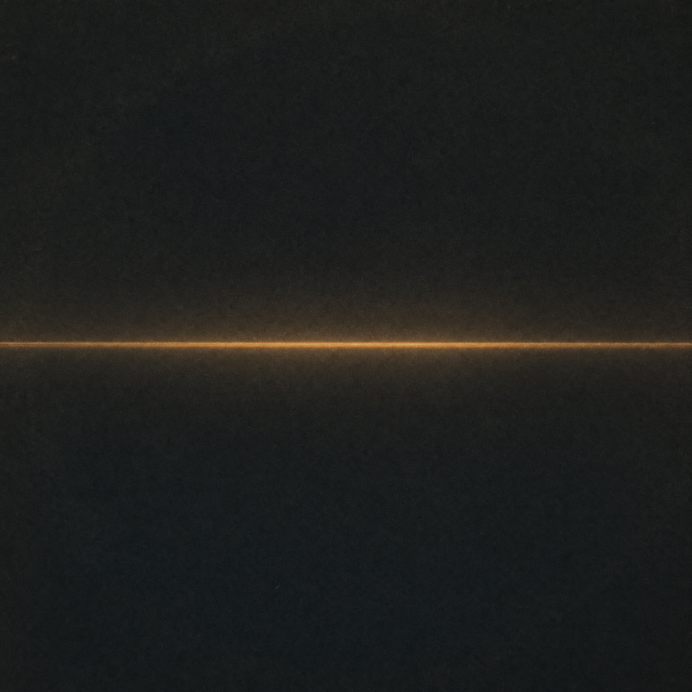
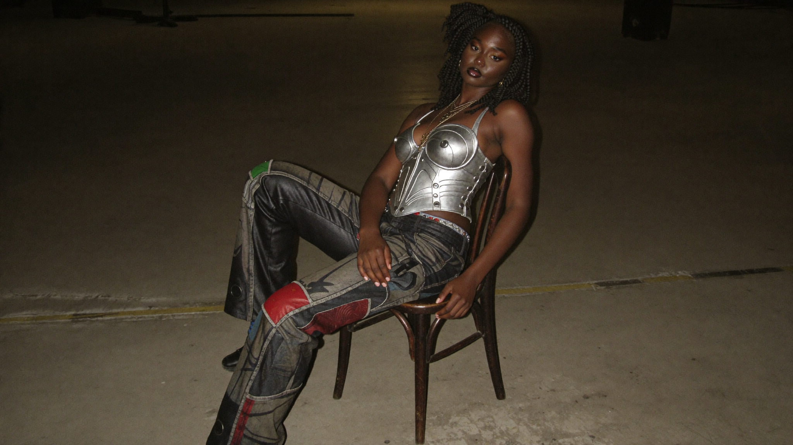

Some artists know exactly who they are. They just haven't found the form yet.
Sable
Brand Identity and Digital Presence
Self-initiated, 2026

Sable is a young musician from London. She carries African Caribbean heritage into everything she makes. Her dress sense is fierce and considered. Her sound is soulful, layered, impossible to place in a single genre. She is completely, unapologetically herself.
She didn't need to be explained. She needed a world built around her.
the challenge
The brief on the surface: build a digital presence for an emerging artist.
The real brief: find a visual and verbal language as distinctive as she is. Something that could hold the contradiction at the centre of her work. Vulnerable in the music. Guarded in the world. Soulful in sound. Fierce in person.
We didn't pick a lane. We built something that lives in the contradiction.
the discovery
We started with the images.
Not mood boards or references. The actual character. The way she holds herself in front of a camera. Eyes closed in the portrait shots, completely present in herself. Direct and commanding in performance, mic in hand, walking toward a crowd on a wooden floor that becomes a stage.
Two completely different registers. The same person in both.
That's where the identity came from. Not from a genre. Not from a scene. From the specific tension between who she is when the world is watching and who she is when the music takes over.
The creative insight: soft and sharp. Soul and grit.
She holds both, and she doesn't resolve the contradiction for you.
the hero
The hero isn't a banner. It's the case for the whole identity.
She appears still first. Composed, present, entirely herself before the performance begins. Then she walks out. The stage finds her. The shot slows as she arrives, then fades to black.
Two registers. One unbroken movement. The video doesn't introduce Sable. It shows you exactly what the brief was asking us to hold.
The identity system was built from the inside out.
Every decision traces back to the same place.
the wordmark.
Lowercase, always. Wide-tracked serif. The name takes up the space it deserves and nothing more. Playfair Display for its warmth and contrast. Cormorant would have been too delicate. This needed more presence.
london beneath the name, in gold, tracked wide.
Not decorative geography. Cultural context. For a young Black British artist making soulful music, where she is from carries weight.
the palette.
Bone leads. Not white, not grey. Warm, intimate, present. It is the first thing you encounter. Dark sections follow as you go deeper into her world. Gold runs throughout as the thread that connects them. The warmth in every colour is deliberate. Nothing in this identity is cold.
the ground system.
Bone on arrival. Night as you go deeper. The site mirrors the artist: open on the surface, something heavier underneath.
the photography.
Intimate and cinematic. Practical light sources only. The light finds her, she does not stand in it. Every image built to the narrative, not retrofitted from existing assets.
the copy voice.
Still. Present. She gives everything in the music and almost nothing outside it. The copy does not explain her. It creates the conditions for listening.
wordmark
sable
london
colour
type
display
Playfair Display
body and ui
DM Sans
the work
A single page with three distinct worlds.
The arrival, where Sable meets you on her own terms. The music, where the album Between the Words lives alongside a buyable experience. The tour, where upcoming shows connect directly to ticketing.
Nothing is decorative. Everything earns its place.
Between the Words
the reflection
The hardest part of this engagement was resisting the urge to explain her. Every instinct in brand work points toward clarity, toward making things legible. Sable required the opposite: building something that held ambiguity as a feature, not a problem. The tension between soft and sharp, between soul and grit, needed to stay unresolved. The moment we tried to resolve it, we lost her.
If we did this again, we'd generate the photography earlier. The visual world came together quickly once the images existed. Next time, we start there.

This is where the studio's story ends and hers begins.